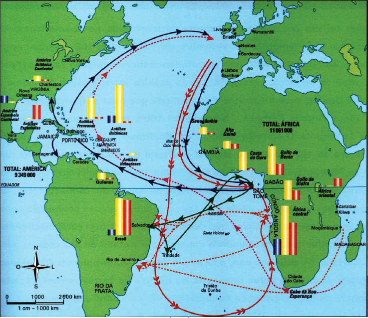
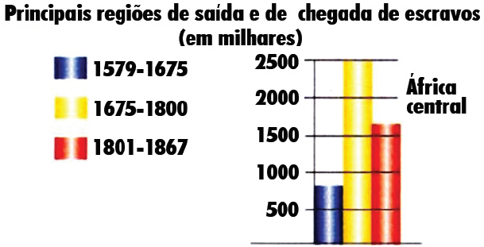

O TRÁFICO NEGREIRO

Mapa baseado no original: PÉTRÉ-GRENOVILLEAN, Olivier. La documentation
photographique. In: Les traites negrières. Paris: 2003. p. 29.

Na análise do mapa e do gráfico sobre o ritmo do
tráfico negreiro, conclui-se que,
-
no século XIX, houve uma diminuição do fluxo
de escravos africanos para Cuba.
-
no século XIX, a proibição do tráfico negreiro
nas colônias britânicas eliminou o fluxo de
escravos para a América do Norte.
-
nos séculos XVIII e XIX, o fluxo de escravos
africanos para regiões de colonização portuguesa
na América sofreu pouca oscilação.
-
ao longo do século XVII, a maioria dos
escravos africanos transportados para a
América dirigiu-se para colônias espanholas.
-
no último quartel do século XVII, houve um
aumento do fluxo de escravos africanos para
a América Espanhola Continental.